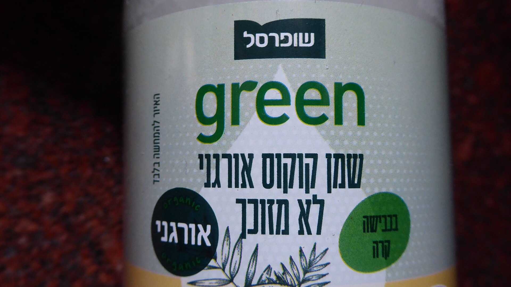
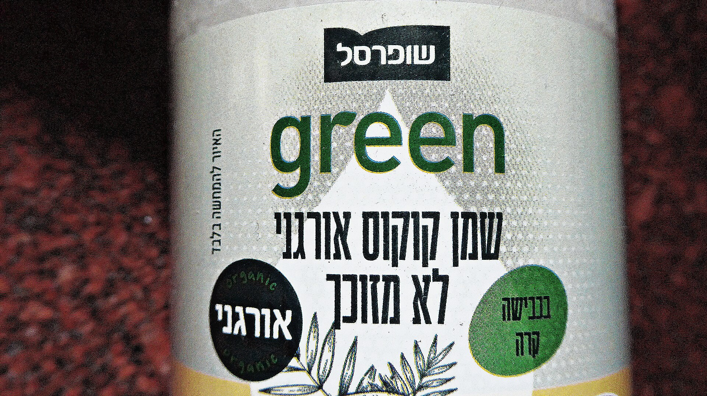

Reading a set of real texts closely for how their language makes meaning and moves power. The lens: language is where power hides in plain sight.
The set of texts you gather and study. Same kind throughout (all cartons, or all news articles), and enough of them to see a pattern.
Close reading for meaning versus counting. A number tells you how many. This tells you how, and for whom.

Name the sneakiest phrase.
On your own first, then we'll hear a few.

Same kind of text throughout. Can you actually gather it?